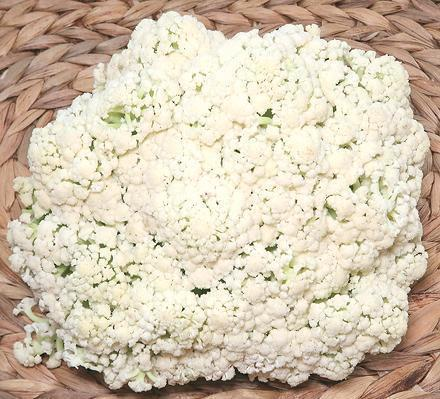

Chinese Taishan Cauliflower

[Taishan Cauliflower; Brassica oleracea Group Botrytis ??]
This is probably pretty much what European cauliflower looked like in
the time of the Roman Empire. Selective breeding during Medieval and
Renaissance times developed the heavy white curd cauliflower we enjoy
today. The photo specimen is a particularly fine specimen, whiter and
with less stem showing than many. When they first appeared, in 2017,
they were greener and more disorderly, so selection has been in effect.
The taste of this vegetable is very much that of cauliflower, but
"greener" and sweeter than our regular Western cauliflower - less
of a blank canvas and more of a feature flavor. Raw, it sometimes has
a little bitterness, but not objectionably so, and the bitterness fades
with cooking. The photo specimen was a head 11-1/2 inches across and
weighing 24 ounces.
More on Cabbage Flowers.
Buying:
This vegetable is now grown in California and
becoming fairly common in the large Asian markets here in Los Angeles.
It appears to be quite popular with the Asian community. The photo
specimen was bought in mid February from a large Asian market in Los
Angeles (San Gabriel) for 2020 US $1.99 / pound, but I have bought it
at $1.59 / pound later in the year.
Storage:
If it is in good condition, it will hold for
4 or 5 days refrigerated loosely wrapped in plastic.
Cooking:
This vegetable can be used raw in salads,
but is more often cooked. Steaming, simmering, and stir frying are
suitable methods. Do not overcook, the green stems should still have
a little crunchiness to them.
cb_caulicz 170721 - www.clovegarden.com
©Andrew Grygus - agryg@clovegarden.com - Photos on
this page are © cg1 - Linking to
and non-commercial use of this page permitted